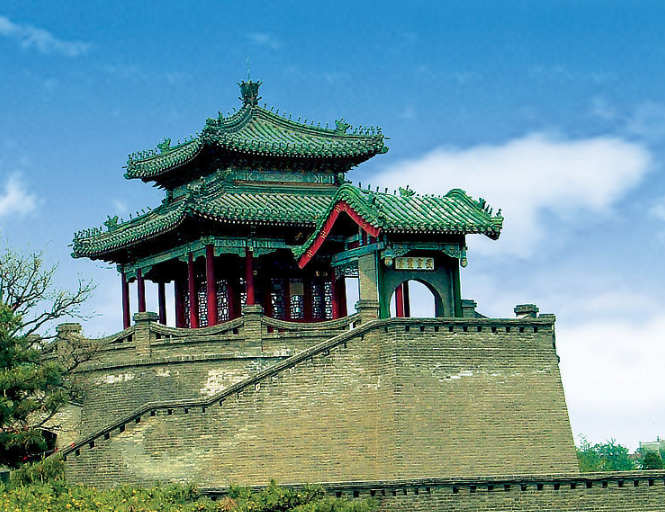
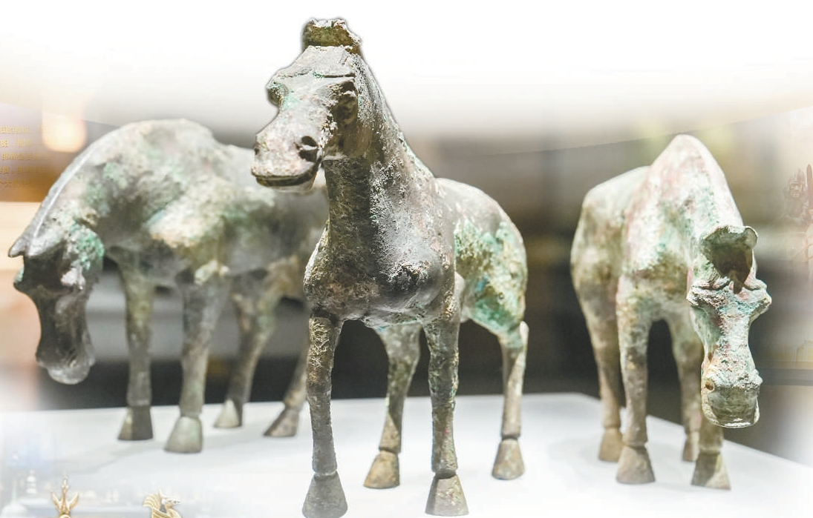
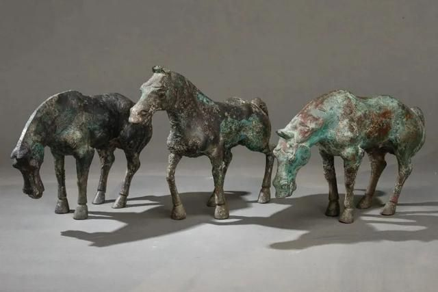
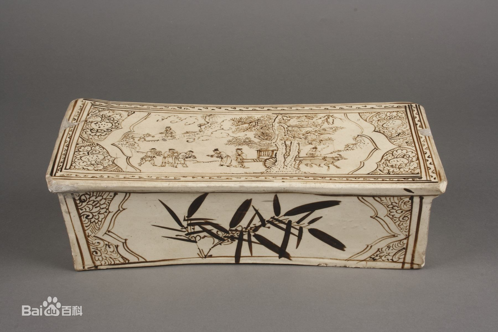
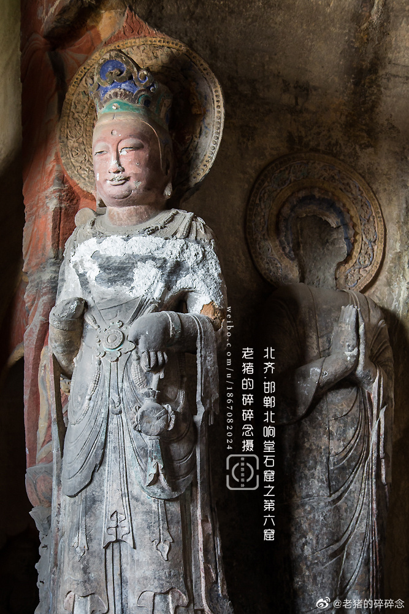

四大基本陈列 邯郸市博物馆 · 人民路东段399号
"甘丹"风华——邯郸历史文化陈列（三楼，镇馆之宝集中地）；邯郸古代石刻艺术陈列；磁州窑瓷器陈列；方圆世界——中国历代钱币陈列。
你登上武灵丛台。
两千三百年前，
赵武灵王就站在这座高台上，
检阅他改革过的军队——
骑兵穿着短衣长裤，
不再穿宽袍大袖。
他推行的"胡服骑射"，
是中国历史上第一次服装革命。
走进邯郸市博物馆，先记住一个词："甘丹"——这是甲骨文里邯郸最早的名字。三楼"甘丹风华"展厅里，三匹战国青铜马站在展柜中央：它们比著名的"马踏飞燕"还要早约四百年，是中国最早的写实风格青铜马，禁止出境展览的国宝。旁边是磁州窑瓷枕，枕面上画着宋代的市井人间；再往里，"邯郸微笑"陶俑正替这座城笑了一千五百年。

而这座城的根，藏在成语里。负荆请罪、完璧归赵、邯郸学步、胡服骑射——一千五百多条成语从这里走向汉语。你从小背的典故，主角都曾真实地在这条街巷里活过。城外的响堂山石窟，北齐皇室开凿的佛像在山体里微笑了一千四百年——那些造像的衣纹，是丝绸之路上东西方审美的相遇。
如果你想亲眼看看：人民路东段399号，周一闭馆，免费。先上三楼看青铜马，再去石刻展厅找那尊微笑的菩萨。当你和"邯郸微笑"对上眼，可能就会明白——
有些城市把历史写进书里，
邯郸把历史写进成语里。



